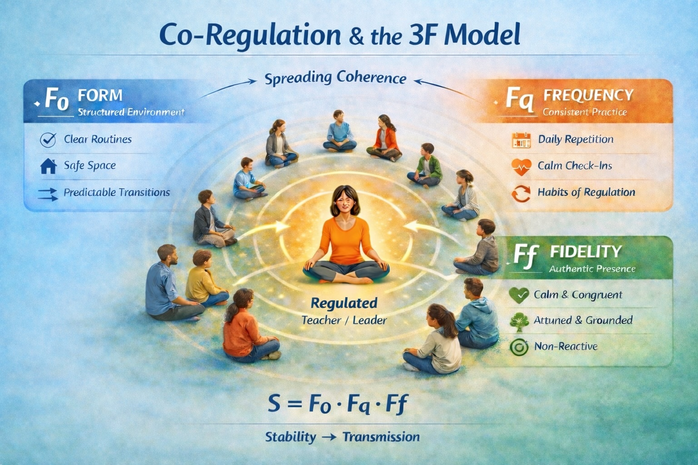

← Back to Ladder
Level 5 — Systems
One phenomenon, multiple valid descriptions.

Add your co-regulation image here as co_regulation_image.jpeg.
This page is ready for the resolution toggle prototype.
When one person is calm, others begin to feel calmer too.